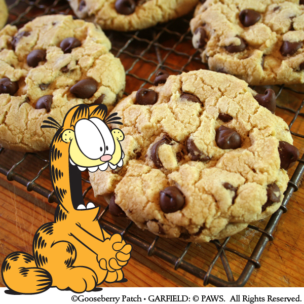

Chocolate Chip Cookies

This is the best chocolate chip cookies recipe ever!
No funny ingredients, no chilling time, etc.
Just a simple, straightforward, amazingly delicious,
doughy yet still fully cooked, chocolate chip cookie
that turns out perfect everytime!
Ingredients
- 227 g salted butter* softened
- 200 g white (granulated) sugar
- 220 g light brown sugar packed
- 2 tsp pure vanilla extract
- 2 large eggs
- 360 g all-purpose flour
- 1 tsp baking soda
- ½ tsp baking powder
- 1 tsp sea salt***
- 350 g chocolate chips (or chunks, or chopped chocolate)
Steps
- Preheat oven to 375 degrees F.
- Line a baking pan with parchment paper and set aside.
- In a separate bowl mix flour, baking soda, salt, baking powder. Set aside.
- Cream together butter and sugars until combined.
- Beat in eggs and vanilla until fluffy.
- Mix in the dry ingredients until combined.
- Add 12 oz package of chocolate chips and mix well.
- Roll 2-3 TBS (depending on how large you like your cookies) of dough at a time into balls and
place them evenly spaced on your prepared cookie sheets. (alternately, use a small cookie scoop to make your cookies).
- Bake in preheated oven for approximately 8-10 minutes. Take them out when they are just BARELY starting to turn brown.
- Let them sit on the baking pan for 2 minutes before removing to cooling rack.